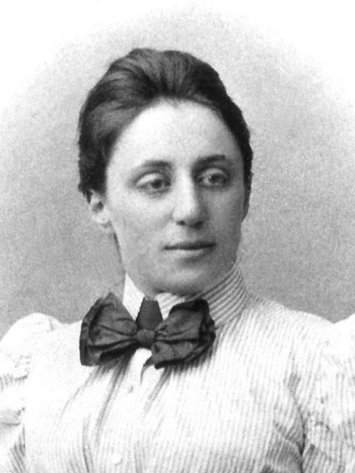

Амалия Эмми Нётер
23.03.1882 - 14.04.1935
немецкий математик, внесла серьезный вклад в абстрактную алгебру и теоретическую физику.
Даже сам Альберт Эйнштейн восхищался «проницательным математическим мышлением» Нётер.
Любовь к науке у Амалии возникла, скорее всего, на генетическом уровне. Отец девушки
Макс Нётер занимался алгебраической геометрией и теорией алгебраических функций, читал лекции
в университете Эрлангена. Переехав в Гёттинген, Амалия общалась с известными учеными
Давидом Гильбертом и Феликсом Клейном, которых интересовали знания Нётер в области теории
инвариантов. Также женщина сотрудничала с советскими математиками, читала лекции в
Московском университете.
Эмми Нётер создала новое направление в абстрактной алгебре, кардинально изменила теорию колец,
полей. Теорема Нётер о дифференциальных инвариантах в вариационном исчислении была названа
«одной из самых важных, используемых в современной физике».
- ВЕРНУТЬСЯ НАЗАД -